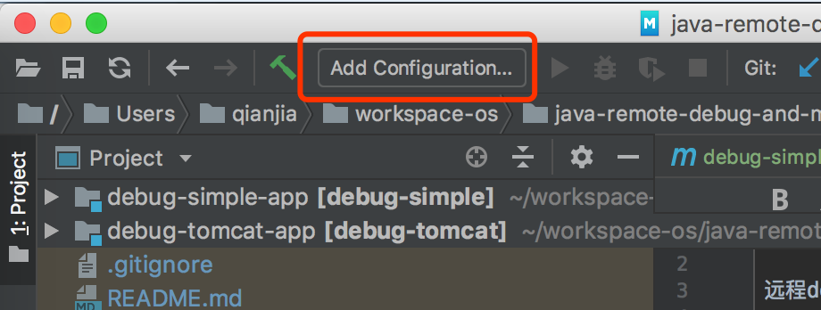
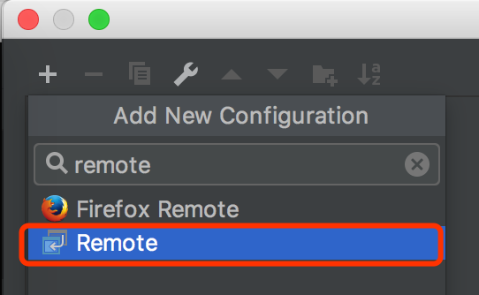
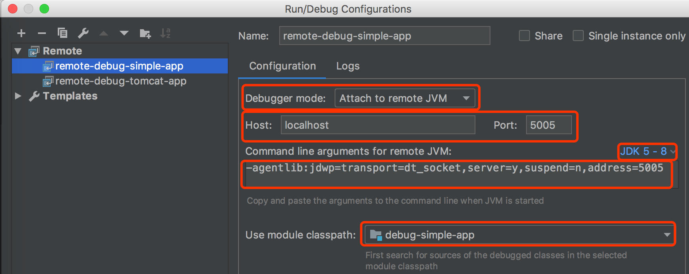
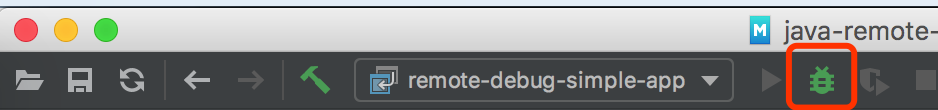

本文介绍了远程Debug Java进程的方法。
远程debug的意思是启动一个Java进程，启动一个debugger进程，将两者连接起来，利用debugger来debug Java进程。
事实上目前所有的IDE的debug功能都是通过远程debug方式来实现的，它们都利用了一个叫做JDPA（Java Platform Debugger Architecture）的技术。
利用JDPA我们除了能够在IDE开发的时候debug，也能够将IDE attach到一个生产环境上正在运行的Java进程做debug（事实上这两个场景在本质上是一样的）。
下面会用两个例子来说明如何使用Intellij IDEA来debug一个Java进程。
debug一个简单的Java应用
我们做了一个很简单的Java应用，它启动后会每隔2秒打印出一个不断增长的数字。
- 执行
mvn clean package打包 - 执行
java -jar target/debug-simple-app.jar运行
现在我们要用IDEA远程Debug它。我们先ctrl+c把进程停止掉。
1）把项目导入到IDEA里，因为如果没有源码的话我们没有办法打断点
2）按照下面步骤新建一个Remote Run/Debug Configuration:
- 
选择Remote
除了改个名字，设定Use module classpath，其余的选项不需要修改，直接用默认的就行 
这里解释一下各种参数：
Debugger mode：debugger的模式，有两种：attach和listen。
- attach的意思是debugger连接到被debug的Java进程，是主动式的。
- listen的意思是debugger监听由Java进程发送过来的通信，是被动式的。
Host和Port的设定了被debug的Java进程的Host和Port，实际上这也告诉我们，远程Debug是通过网络进行的。
JDK选项可根据你的不同JDK版本来构造不同的Command line arguments for remote JVM。
Command line arguments for remote JVM这个文本框你是不能修改的，它告诉了你如果要这个Java进程能够被远程Debug，那么必须添加这些参数才可以。 所以你要把这里的参数复制出来，后面会用得着。
Use module classpath，该选项设定使用那个module的源代码来debug。
3）把刚才的Command line arguments for remote JVM添加到刚才的运行命令。
像这样：java -agentlib:jdwp=transport=dt_socket,server=y,suspend=n,address=5005 -jar target/debug-simple-app.jar
4）点击下图里的Debug按钮开始debug

你会发现Console里出现这么一句话Connected to the target VM, address: 'localhost:5005', transport: 'socket'，
这说明debugger已经attach成功了。
5）在debug-simple-app里的代码打个断点看看效果。
debug一个tomcat应用
实际上debug一个tomcat应用和前面的例子没有什么大的区别。
我们写了一个很简单的Servlet，它会返回Hello World以及被访问的次数。
- 执行
mvn clean package打包 - 把
target/debug-tomcat-app.war丢到tomcat - 然后访问http://localhost:8080/debug-tomcat-app/hello查看结果
现在我们要用IDEA来debug，那么先把tomcat停掉。
1）同样需要把项目导入到IDEA里
2）执行tomcat的bin/catalina.sh jpda start，让tomcat可以被debug
3）执行jps -v | grep Bootstrap找到Tomcat进程：
76905 Bootstrap -Djava.util.logging.config.file=...
-Djava.util.logging.manager=org.apache.juli.ClassLoaderLogManager
-Djdk.tls.ephemeralDHKeySize=2048
-Djava.protocol.handler.pkgs=org.apache.catalina.webresources
-agentlib:jdwp=transport=dt_socket,address=localhost:8000,server=y,suspend=n
-Dcatalina.base=...
-Dcatalina.home=...
-Djava.io.tmpdir=...注意上面的-agentlib...address=localhost:8000参数，记住这个端口
4）和前面的例子一样，新建一个Remote Run/Debug Configuration，把端口设定为8000，然后启动
5）然后打个断点试试
如果你想改变Tomcat的端口怎么做？看看bin/catalina.sh你会发现这么一段注释
JPDA_TRANSPORT (Optional) JPDA transport used when the "jpda start"
command is executed. The default is "dt_socket".
JPDA_ADDRESS (Optional) Java runtime options used when the "jpda start"
command is executed. The default is localhost:8000.
JPDA_SUSPEND (Optional) Java runtime options used when the "jpda start"
command is executed. Specifies whether JVM should suspend
execution immediately after startup. Default is "n".
JPDA_OPTS (Optional) Java runtime options used when the "jpda start"
command is executed. If used, JPDA_TRANSPORT, JPDA_ADDRESS,
and JPDA_SUSPEND are ignored. Thus, all required jpda
options MUST be specified. The default is:
-agentlib:jdwp=transport=$JPDA_TRANSPORT,
address=$JPDA_ADDRESS,server=y,suspend=$JPDA_SUSPEND所以你只需要提供JPDA_ADDRESS环境变量参数就行了。比如这样：JPDA_ADDRESS=5005 bin/catalina.sh jpda start